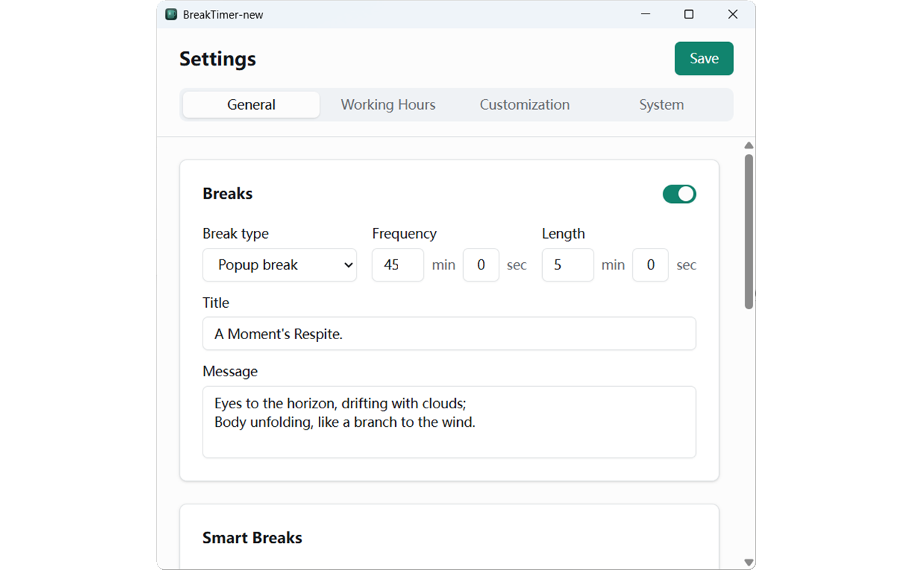
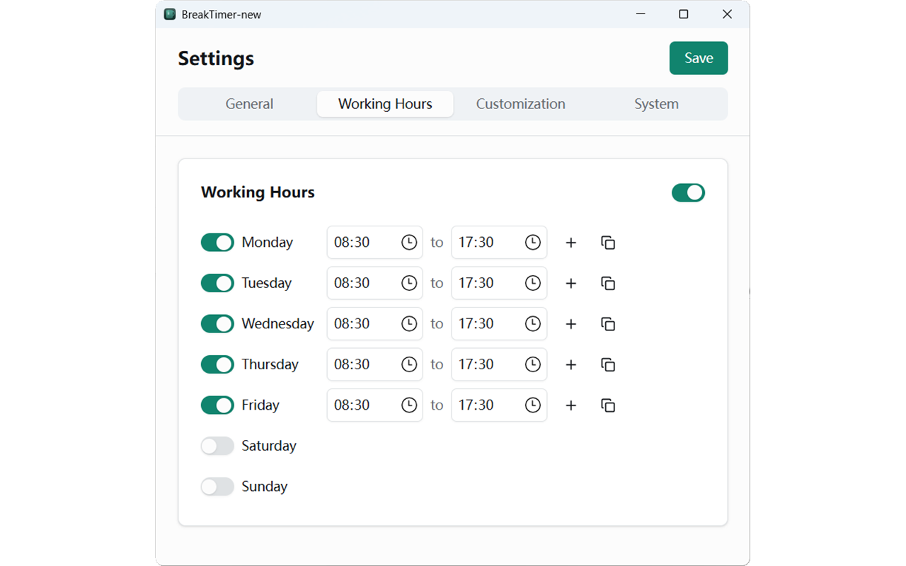
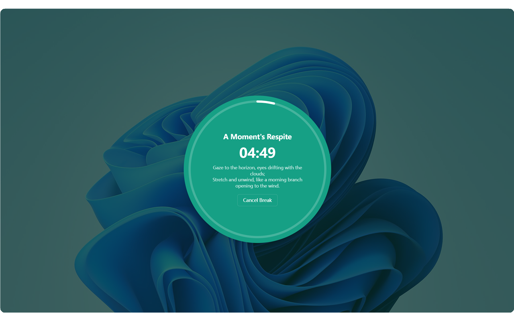
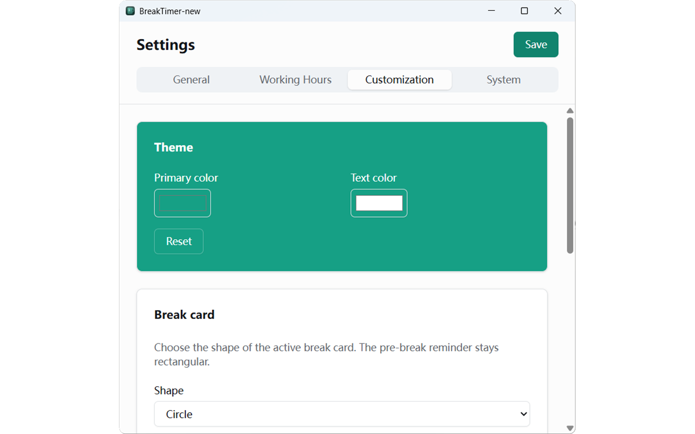

Baidu Pan
Installer + portable ZIP
Reliable inside mainland China; enter the access code after opening the share.
Access code: Announced with the release
Open Baidu PanBreakTimer-new is a Windows break reminder. Set your work and break durations, choose a full-screen break window or system notifications, and keep reminders inside the hours you choose.
From working hours to reminder style, configure it around your routine. When you need to focus, it keeps counting quietly in the tray.
01 REST
Set break frequency and duration at your own pace. The timer resets when you have been away from the computer, so every reminder arrives for a reason.
Interface excerpt · Breaks settings

02 HOURS
Set working hours for each day. Reminders appear only while you are working, and the timer starts fresh when a new work session begins.
Interface excerpt · Working hours

03 BREAK
Let breaks fill the whole screen, or just receive a quiet system notification. When a break arrives, postpone it, skip it, or start it now.
Interface excerpt · Full-screen break

04 STYLE
Adjust theme colors, break card shape, sounds and the backdrop so every break reminder feels right for you.
Interface excerpt · Customization

Both the installer and the portable ZIP are shared on a file host — pick whichever is easier for you. GitHub Releases keeps the version history and SHA256SUMS.
Installer + portable ZIP
Reliable inside mainland China; enter the access code after opening the share.
Access code: Announced with the release
Open Baidu PanInstaller + portable ZIP
No desktop client needed — save and download straight from the browser.
Open Quark PanNo download link is configured for this release yet. For now you can use the installer or portable ZIP from GitHub Releases; the file-host links appear here after the next deploy.
BreakTimer-new_v*_x64-setup.exe
For everyday installation. Installs per user by default and usually does not require administrator rights.
BreakTimer-new_v*_x64-portable.zip
Extract to a writable folder and run breaktimer-new.exe. Settings
and runtime data stay in data\ next to the app and move with the
folder.
System requirements: Windows 10 or Windows 11, 64-bit; Microsoft Edge WebView2 Runtime is required.